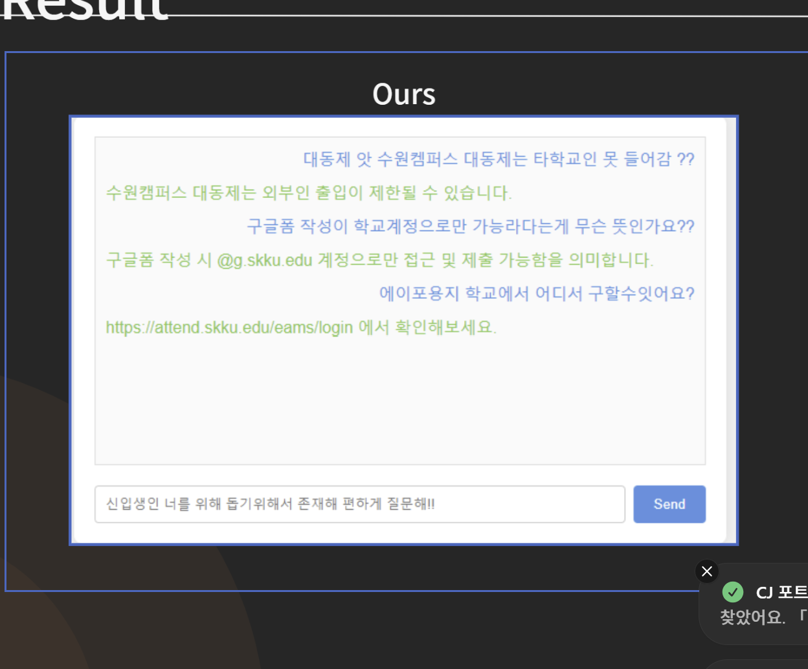
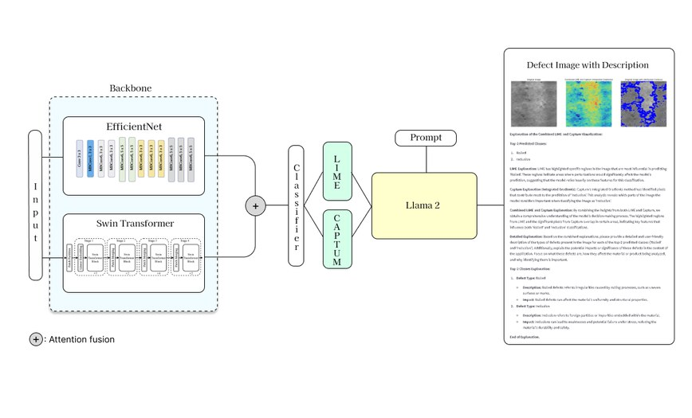
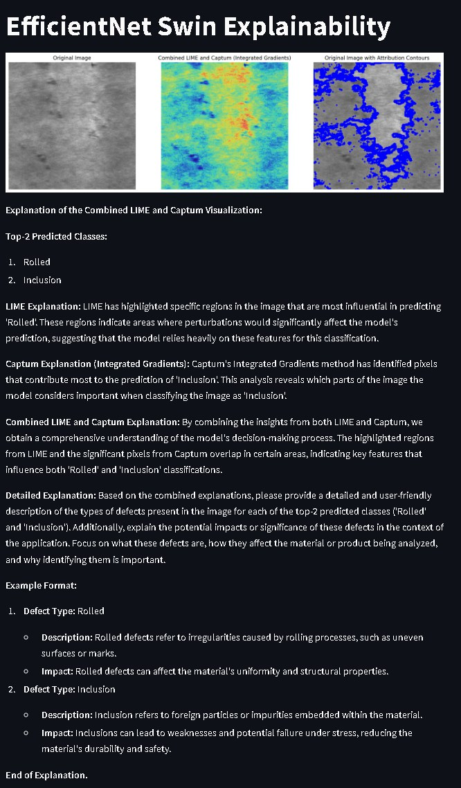
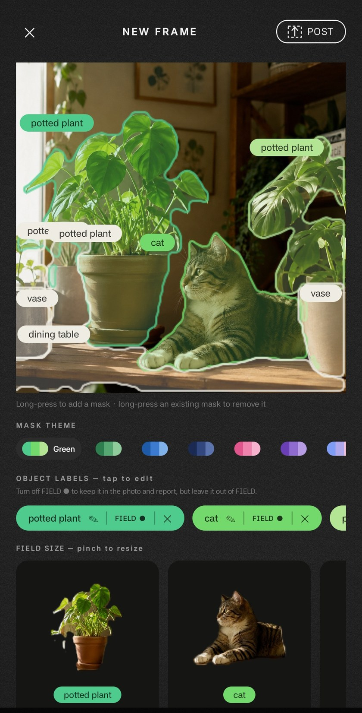
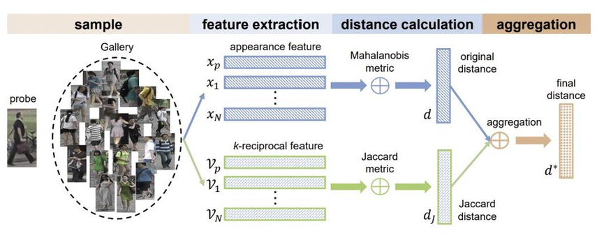
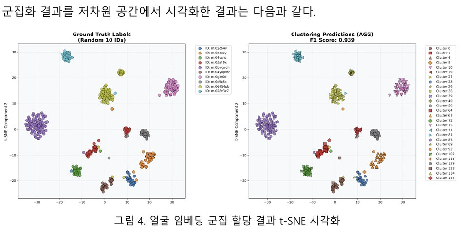
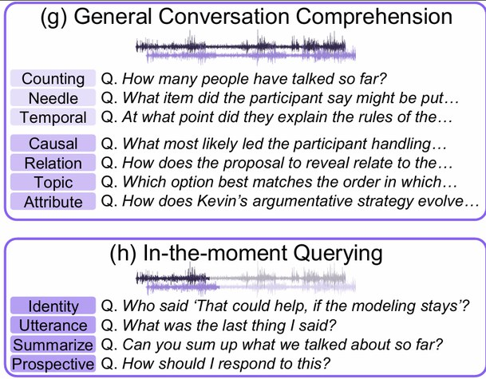
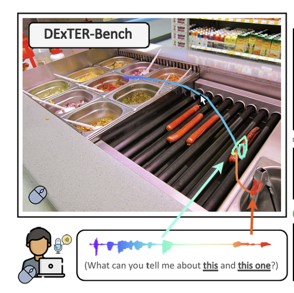

포트폴리오
남윤지
[CJ올리브네트웍스 – AI Engineer]
01
프로젝트
02
논문
03
기타 활동
목차

트러블슈팅
결과 및 개선
2
프로젝트
01
1
E2E RAG 챗봇
: 신입생의 학교생활 적응을 돕는
LangChain 기반 RAG 챗봇 개발
LangChain
Vector DB
기간: 2024년 3월 - 2024년 6월
OpenAI API
1. 학교생활 질문에 답하지 못함
•강의·학칙·규정만 담은 초기 DB는
중간 테스트에서 건물 위치, 이동 방법 등
학교생활 질문에 제대로 답하지 못함
→학내 커뮤니티 데이터 추가 수집을 제안해
지식 베이스 보완
2. 학내 줄임말을 이해하지 못함
•질문에 줄임말이 포함되면 모델이 의미를
이해하지 못해 답변 품질 저하
→학내 줄임말 사전을 구축해 검색과 답변 품질 개선
완성 및 유용성 평가
•각 모듈을 연결하고 답변을 검증해
실제 사용 가능한 서비스로 완성
•사람이 답변 유용성을 5점 척도로 직접 평가.
기존 교내 규칙 기반 챗봇보다
평균 2점 이상 높은 평가
본인 역할
팀장 · 서비스 기획 및 RAG 구현
•신입생 대상 사용자층·요구사항 정의
•데이터 수집·전처리 및 Vector DB 구축
•LangChain 기반 검색·생성 파이프라인 연결

트러블슈팅
결과 및 개선
3
프로젝트
01
2
설명 가능한
결함 탐지 시스템
: 스마트팩토리캡스톤디자인2,
제조 공정 결함 탐지와 판단 근거 설명
Swin Transformer
XAI · LLM
기간: 2024년 8월 - 2024년 12월
Streamlit
1. 근거를 알 수 없는 판정
•분류 결과만 제시하면 현장 담당자가 판정 이유를
확인할 수 없어 결과를 신뢰하고 조치하기 어려움
→XAI 기법과 LLM을 결합해 사용자가
판단 근거를 자연어로 확인할 수 있도록 구현
2. 다양한 결함 유형의 탐지 성능
•제조 공정의 결함 유형이 다양해
탐지 성능과 해석 가능성 개선 필요
→네 가지 비전 backbone의 실시간 탐지 성능을
비교하고 EfficientNet-Swin Transformer
기반 모델 제안
역할 및 배운 점
•역할: 참여연구원 (성균관대학교 산학협력단).
비전 backbone 성능 비교, XAI 기법 통합
•배운 점: 모델 성능 검증에 더해 판단 근거를
사용자가 이해할 수 있게 제공해야
현장에서 쓸 수 있음
구현 결과
•모델 검증, 설명 가능성 확보, 시스템 구현까지
전 과정 수행
•이미지 업로드, 모델 선택, 예측 결과 확인이
가능한 Streamlit GUI 구현
•한국저작권위원회 SW프로그램 등록
(C-2024-052449)


트러블슈팅
결과 및 개선
4
프로젝트
01
3
개인화 온디바이스
객체 분할 앱 개발

YOLOE
Kotlin
LiteRT
MediaPipe
기간: 2026년 6월 - 현재
1. GPU delegate 최적화
•실기기 테스트 시 live cam 내 객체 인식 속도가
예상보다 2-3배 가량 느림
→GPU delegate를 지정했으나, onnx2tf 변환이
tflite에 동적 shape signature를 남겨서
GPU delegate가 이를 거부하고 CPU 연산 진행
→tflite flatbuffer를 in-place 패치하여
signature를 실제 shape으로 정적화
배운 점
•코드 상으로 문제가 없더라도 변환기/런타임/가속기 등
주요 경계에서 output을 확인하는 습관
•테스터 피드백을 반영해 앱 기능을
구체화하는 과정 경험
GPU delegate 최적화
[Before]
GPU delegate 그래프 거부, YOLOE CPU 실행 시 312ms/frame
[After]
YOLOE 실행 시 54ms/frame 으로 속도 개선
2. 사용자 지정 이름 인식
•반려동물처럼 사용자에게 의미 있는 개체는
일반 클래스명(cat)이 아니라 사용자가 붙인
이름으로 인식할 필요
→이름을 붙인 개체의 외관 특징을 기기에 저장하고,
이후 촬영에서 유사한 개체의 표시 라벨을
그 이름으로 교체. 모델 가중치는 그대로 유지
트러블슈팅
결과 및 개선
5
프로젝트
01
4
인물 클러스터링
: 배리어프리 자막 제작을 위한
영상 속 인물 식별 클러스터링 개선
Clustering
Face Recognition
기간: 2025년 7월 - 2025년 8월
streamlit
1. 데이터 노이즈로 인한 군집 품질 저하
•동일 ID 내 인종, 성별이 혼재 되어 있는 경우가 있어, 임베딩 유사도와 정답 레이블 불일치
→성별 분류 모델 기반 성별 필터링과 ID별 최소 이미지 수 기준 적용하여 데이터 정제
2. k-means의 고차원 임베딩 반영 한계
•군집 중심 기반 방식만으로는 국소 이웃 관계와 미세한 거리 차이를 반영하기 어려워 클러스터링 성능 저하
→Re-ranking 방식 적용하여 이웃 관계 보정 및 병합형 군집화로 교체하여 성능 개선
배운 점
•전처리, 임베딩, 이웃 보정, 군집화, 검증 등
파이프라인을 독립적인 모듈로 구성해 생각하여 성능 저하의 원인(데이터 vs. 알고리즘)을 파악하는 법
성능 개선
•100개 id 10회 랜덤 추출 후 진행한 평가에서 평균 성능 Pairwise F1 91 -> 94 개선
•목표 초과 달성


MemEIC: A Step Toward Continual and Compositional Knowledge Editing
6
논문
02
1
[NeurIPS 2025]
[pdf]
연구 개요 및 역할
개요: 복합적인 질문에도 정확하게 답할 수 있는 VLM 지식 편집 기술 연구
•문제: 기존 멀티모달 지식 편집은 시각 또는 텍스트 한쪽만 단발로 수정하는 데 그쳐, 지식이 연속적으로 갱신되고 두 모달리티의 편집을 결합해 추론해야 하는 실제 상황을 다루지 못함.
•제안: 연속적·복합적 지식 편집을 평가하는 최초의 벤치마크 CCKEB와, 외부 메모리 검색 + 모달리티별로 분리된 Dual-LoRA 내부 메모리 + 복합 질의에서만 두 경로를 잇는 Knowledge Connector를 결합한 MemEIC.
•논문 전체 결과: LLaVA-1.5 기준 복합 질의 신뢰도(CompRel) 평균 80.56으로 최고 베이스라인(LoRA 62.05) 대비 +18.51p, 500회 연속 편집 후에도 이전 편집을 안정적으로 유지.
•본인 역할: 베이스라인 학습 안정화 및 성능 평가
Jin Seong, Jiyun Park, Wencke Liermann, Hongseok Choi, Yoonji Nam, Hyun Kim, Soojong Lim, Namhoon Lee
MemEIC: A Step Toward Continual and Compositional Knowledge Editing
7
논문
02
1
[NeurIPS 2025]
[pdf]
연구 개요 및 역할
개요: 복합적인 질문에도 정확하게 답할 수 있는 VLM 지식 편집 기술 연구
본인 역할: 베이스라인 학습 안정화 및 성능 평가
트러블슈팅
결과 및 개선
[문제 상황]
•베이스라인 방법 학습 시 NaN logit이 나오며 모델 붕괴
[해결 과정]
•실패 로그·샘플 확인, KL Divergence 추이로 편집 전후 가중치 변화 진단.
•반복 편집 중 parameter drift가 수렴하지 않아 학습 불안정성 발생.
•Weight interpolation, model merging 등 연속 학습 방법을 적용하고 파라미터 조합 탐색
•조건별 지식 편집 정확도와 안정성을 반복 확인해, 지식 수정과 안정성이 양립하는 지점 탐색.
[Before]
•NaN logit 출력으로 학습·추론 불가
[After]
•2개의 Backbone VLM에서 측정 가능 수치가
나오도록 모델 안정화.
•베이스라인 정확도 10~20% 확보.
•NeurIPS 2025 공저자 게재
Jin Seong, Jiyun Park, Wencke Liermann, Hongseok Choi, Yoonji Nam, Hyun Kim, Soojong Lim, Namhoon Lee
SitCom: Scaling Egocentric Multi-Party Spoken Dialogue for Situated
Communication Assistance
8
논문
02
2
[NeurIPS 2026]
[pdf]
연구 개요 및 역할
개요: 1인칭 시점(egocentric) 다화자 음성 대화 기반 음성 어시스턴트 연구
•문제: 여러 명이 동시에 말하는 일상 대화에서 사용자는 누가 뭘 말했는지 놓치기 쉬운데, 웨어러블로 이를 돕는 어시스턴트를 만들기엔 1인칭(egocentric) 다화자 음성 대화 데이터가 수백 시간 규모로 부족.
•제안: 합성 15.8k시간 + 실제 녹음 144시간으로 기존 최대 대비 10배 이상 큰 corpus SitCom, 전량 사람 검증을 거친 4.3k 문항 QA 벤치마크 SitCom-Bench(대화 이해 7종 + 대화 도중 질의 4종), 경량 베이스라인 Sitformer 모델.
•논문 전체 결과: 합성+실제 데이터를 함께 써야 sim-to-real 격차가 줄어듦. 대화가 진행 중일 때 답하는 in-the-moment 질의는 최신 상용 모델도 0.29~0.33 수준에 그침.
•본인 역할: QA 평가 설계 및 생성 파이프라인 구축
Heeseung Yun*, Sehun Lee*, Tony Woo†, Yoonji Nam†, Sung-Feng Huang, Chao-Han Huck Yang, Gunhee Kim. (*,† Equal contribution)
SitCom: Scaling Egocentric Multi-Party Spoken Dialogue for Situated
Communication Assistance
9
논문
02
2
[NeurIPS 2026]
[pdf]
연구 개요 및 역할
개요: 1인칭 시점(egocentric) 다화자 음성 대화 기반 음성 어시스턴트 연구
본인 역할: QA 평가 설계 및 생성 파이프라인 구축
데이터셋 설계
구축 결과
[문제 상황]
•기존 QA는 발화 내용의 단순 질문·감정·직업 추론 중심.
실제 대화 속 보조 능력 평가에는 한계
[해결 과정]
•사용 맥락을 반영해 평가 능력을
“대화 내용 이해”와 “현재 상황에 맞는 응답”으로 구분
•질문자와 그가 속한 대화의 맥락을 함께 고려해야 답할 수 있는 문항 설계
[Before]
•기존 QA: 단순 질문,
감정·직업 추론 중심
[After]
•실제 사용 맥락을 반영한 QA 생성 파이프라인 구축.
•총 4.3k개 문항 구축, NeurIPS 2026 채택

Heeseung Yun*, Sehun Lee*, Tony Woo†, Yoonji Nam†, Sung-Feng Huang, Chao-Han Huck Yang, Gunhee Kim. (*,† Equal contribution)
DExTER: Can Omnimodal Language Models Resolve Audio-Visual Deixis?
10
논문
02
3
[Preprint]
[pdf]
연구 개요 및 역할
개요: "이거 뭐야?" 같은 음성 질의를 포인팅 궤적과 결합해 이해하는 시청각 지시 표현 이해 옴니모달 언어모델 연구
•문제: 사람은 "이거", "저기" 같은 음성 지시 표현을 가리키는 동작과 함께 쓰는데(audio-visual deixis), 옴니모달 언어모델이 이를 해석할 수 있는지 평가할 벤치마크의 부재.
•제안: 이미지 + 음성 질의 + 커서 궤적으로 구성된 최초의 벤치마크 DExTER-Bench(학습 275K, 벤치마크 985개)와, 해석 과정을 4단계로 분해하는 chain-of-resolution 기반 DExTER-Omni 모델.
•논문 전체 결과: 기존 모델은 궤적 단서를 줘도 성능 변화가 거의 없음. 구축한 데이터로 finetuning 시 정확도 9.1% → 23.5%로 향상, 단계별 진단으로 공간 해석이 주 병목임을 규명.
•본인 역할: 태스크 정의 및 훈련·벤치마크 데이터셋 구축
Sehun Lee, Yoonji Nam, Sanghoon Woo, Gunhee Kim.
DExTER: Can Omnimodal Language Models Resolve Audio-Visual Deixis?
11
논문
02
3
[Preprint]
[pdf]
트러블슈팅
결과 및 개선
[문제 상황]
•음성 합성 시 오발화, 단어 간 부자연스러운 공백 등 데이터 품질 저하 요소 존재
[해결 과정]
•합성 음성의 WER(Word Error Rate)를 측정해 발화 오류 샘플을 제외하고, WER 0% 샘플만 유지
•Forced Alignment로 단어 사이 2,000ms 이상의 비정상 공백을 탐지해 해당 샘플 필터링
[Before]
•초기 합성 음성에서 발화 오류 발생
•단어 간 비정상 공백 샘플 다수 포함
[After]
•발화 오류·비정상 공백 필터링 파이프라인 구축
•총 275k개 이미지·음성·커서 궤적 데이터셋 구축
•Amazon MTurk 검증 평균 4.11/5점으로 데이터셋 유효성 확인
연구 개요 및 역할
개요: "이거 뭐야?" 같은 음성 질의를 포인팅 궤적과 결합해 이해하는 시청각 지시 표현 이해 옴니모달 언어모델 연구
본인 역할: 태스크 정의 및 훈련·벤치마크 데이터셋 구축

Sehun Lee, Yoonji Nam, Sanghoon Woo, Gunhee Kim.
수행 역할과 기여
12
논문
02
VLM 지식 편집 연구 (MemEIC)
•학습 실패를 측정 가능한 문제로 전환
•실패 로그·샘플과 KL Divergence 추이로 반복 편집 중 가중치 변화와 학습 불안정성 진단
•Continual Learning 기법으로 편집 정확도와 안정성의 균형점 탐색
•Weight interpolation, model merging 적용 및 파라미터 조합별 정확도·안정성 확인
•추론 불가 상태였던 베이스라인 안정화 → 정확도 10~20% 확보
시청각 지시 표현 연구 (DExTER) & 음성 대화 어시스턴트 연구 (SitCom)
•목적에 맞는 태스크 및 평가 기준 설계
•DExTER: 이미지·음성·커서 궤적을 결합한 지시 표현 해석 태스크 정의
•SitCom: 대화 내용 이해 / 현재 상황에 맞는 응답으로 평가 능력 구분
•실제 사용 맥락을 반영한 문항 설계
•SitCom: 질문자와 소속 대화의 맥락을 고려해야 답할 수 있는 문항 4.3k개 구축
•합성 데이터 품질 관리
•DExTER: 발화 오류·공백 필터링, 275k개 구축, human validation 평균 4.11/5점
13
기타 활동
03
1
현대위아 AX 업무 자동화 교육 조교
[2026. 06]
담당 업무 및 역할
•현대위아 여러 부서 실무자의 AI 활용 업무 자동화 도구 제작 및 실습 지원
•기존 업무 절차·필요 결과물 파악 → 요구사항을 기능으로 정리
•사례: 약 30분 이상 걸리던 반복 작업을 2~3분으로 단축
•지원 도구 예: MATLAB/Simulink 분석·요약, DB·ERP 연계 기여도 보고서 자동 작성, 부품 결함 이력·재고 현황 요약
배운 점
•AX는 기술 자체에만 집중하기보다 실무자의 업무 흐름, 비효율을 정확히 이해하는 데에서 시작
•AI, 개발 용어들을 비개발 직군에게 이해할 수 있도록 설명하고, 중간 결과물을 함께 개선해나가야 실무 적용 가능성이 높아짐
•AI를 단순히 도입하는 것에서 끝나는 것이 아니라, 사용자가 업무에 AI를 효과적으로 활용할 수 있도록 만드는 과정의 중요성